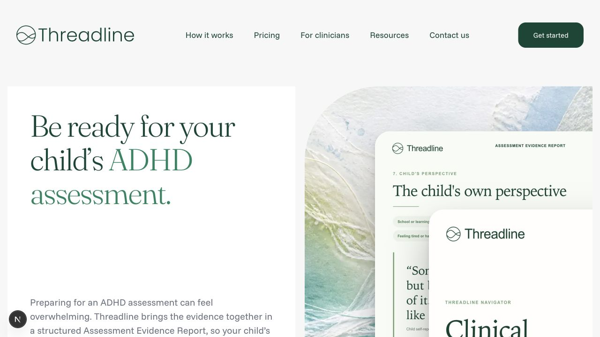
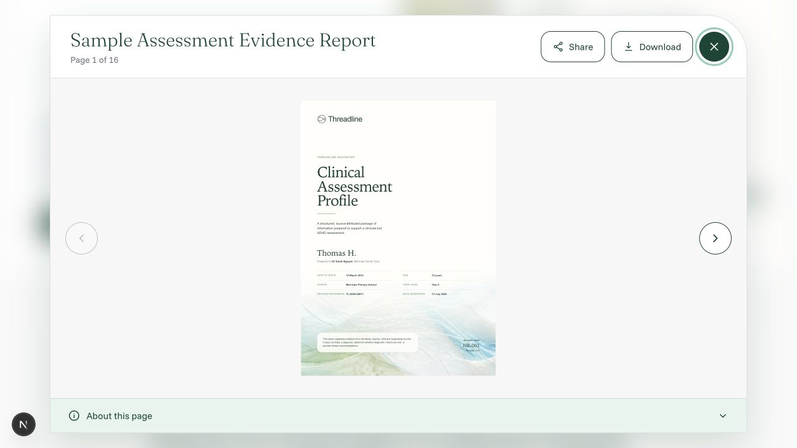
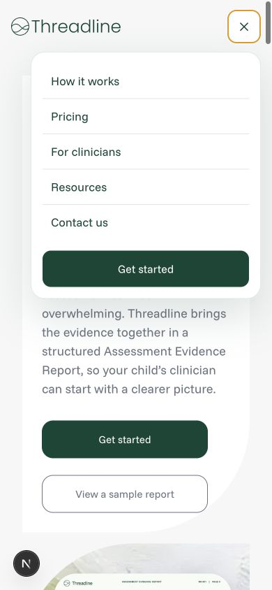
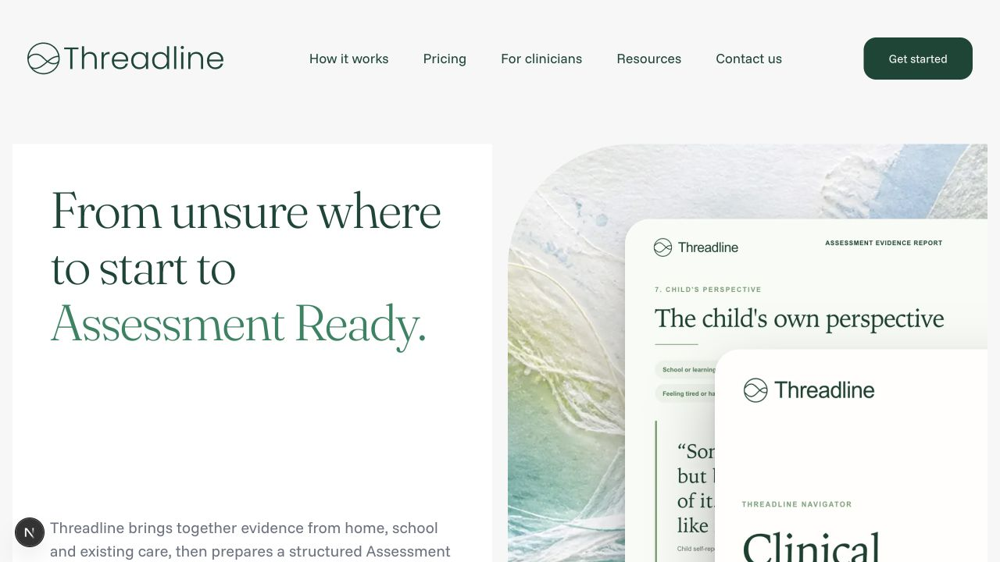
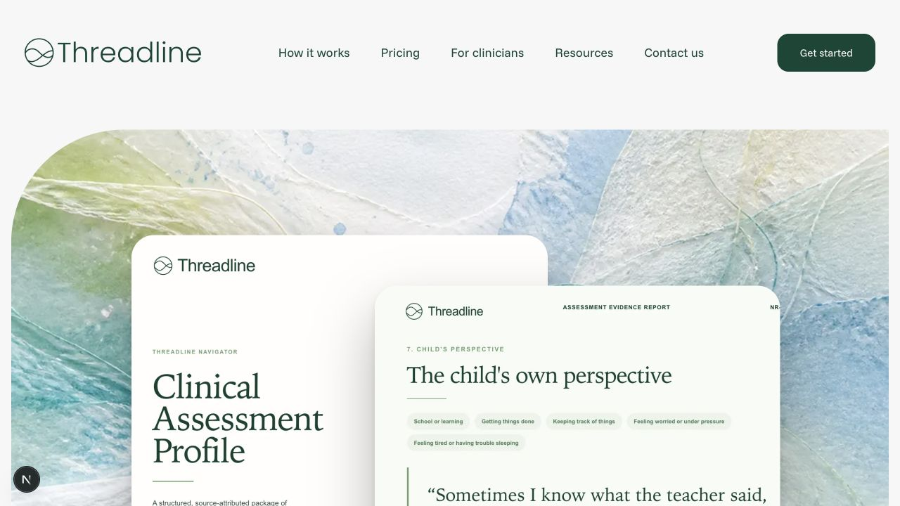

Threadline · WCAG 2.2 AA review
Code accessibility audit
Five rendered states, tied back to the implementation. The semantic foundation is strong, but shared contrast tokens and the report dialog prevent an AA-ready claim.

01Generally healthy
Homepage · desktop
Clear page title, one h1, labeled navigation, strong content hierarchy, and meaningful report imagery.
Risk: shared focus and normal-text colors fail contrast; repeated navigation has no bypass link.

02Needs work
Sample-report viewer
Named dialog, initial focus, Escape close, trigger-focus restoration, bounded page controls, and polite page status.
Risk: focus is not contained and the page behind the modal is not inert; iframe Tab order still needs assistive-technology testing.

03Generally healthy
Mobile navigation
All tested targets are 48–52px high, the menu is readable, and the 390px layout has no horizontal overflow.
Polish: the accessible name stays “Open navigation menu” while the disclosure is expanded.

04Generally healthy
How It Works
Route-specific title, one h1, coherent section headings, descriptive alternatives, and clean narrow-screen reflow.
Risk: the global footer is nested inside main, so it is not exposed as the page-level contentinfo landmark.

05Generally healthy
Pricing
Strong h1 hierarchy, structured included-items list, clear price context, and no clipping at 320px.
Risk: repeats the footer landmark, placeholder-link, and shared color-token issues.